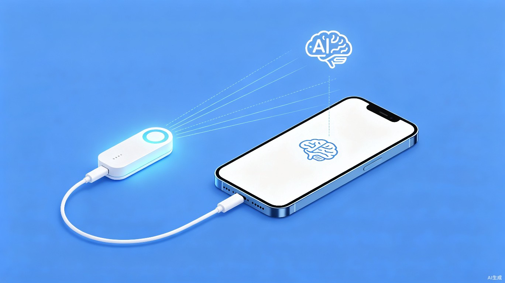
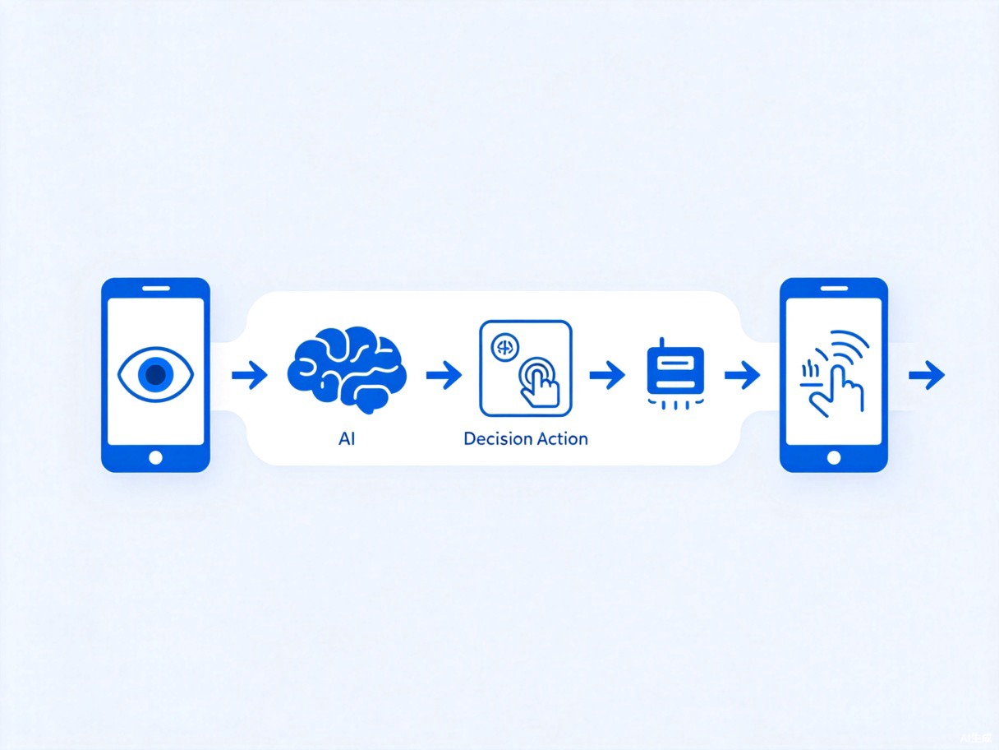

插上外设、说出指令，AI 自主看屏、决策、操控——让手机操作从此无需动手。

iPhone 封闭性极强，用户无法用程序化的方式自动操控手机。现有自动化方案能力极其有限，无法完成打开 App → 搜索 → 点击结果这类跨应用操作链。
灵感来源于一个日常痛点——iPhone 明明支持外接键盘和鼠标，但用户却不能用程序来"假装"成键盘操控手机。如果设计一个小型外设插在手机上，再配合 AI 的"看屏幕做决策"能力，就能形成AI 代你动手操作手机的完整闭环。

"外设 + App + 云端"三者协同，各司其职。
插在手机上的小型硬件外设，接收 App 指令并翻译为真实的触控和按键动作——点击、滑动、打字、回桌面，一应俱全。
与外设通信发出操控指令，同时实时截取屏幕画面发送给 AI 分析决策，是连接外设与云端的大脑中枢。
分析屏幕截图与用户目标，决定下一步操作并下发执行，形成"观察→决策→执行→验证"的完整闭环。
四个核心群体，覆盖从无障碍到效率的全场景需求。
手部有运动障碍、无法精细触控屏幕的人群，可以通过语音指令让 AI 代为操作手机。说出"帮我打开微信发一条消息"，AI 自动完成。
需要在真机上跑自动化测试用例的开发者和 QA，目前 iOS 真机自动化方案极少且成本高昂，本方案极大降低门槛。
希望用自然语言指令批量完成手机操作的用户。比如"把相册最近 20 张照片发到邮箱"，一句话搞定。
面对复杂 App 界面无所适从，可以用语音说出意图，由 AI 代为导航和操作，让智能手机真正"智能"。
从日常效率到远程协助，无处不在的 AI 操控能力。
说出"帮我回微信"，AI 自动解锁 → 打开微信 → 找到对话 → 输入内容 → 发送，全程无需触控。
开发者写一个目标描述，系统自主在真机上完成操作链并验证结果，替代昂贵的商业自动化工具。
说出"把淘宝购物车的东西结算了"，AI 自动完成浏览→选择→下单的完整流程，省时省力。
子女远程帮父母操作手机，发送语音指令即可完成复杂设置，再也不用电话里一步步教了。
iOS 自动化领域长期存在的四大难题。
Android 有 ADB、Accessibility Service、无障碍 API 等丰富的自动化工具。iOS 除了快捷指令（能力极其有限）外，几乎没有程序化操控手段。
商业方案需要特殊企业证书、价格高昂，且随时可能因系统更新失效，缺乏长期稳定的解决方案。
Apple 的 VoiceOver 是纯语音阅读方案，可以"读"屏幕，但无法代替用户"动手操作"，运动障碍用户仍然被排除在外。
即使最强的快捷指令也无法完成"从 App A 跳到 App B 完成某件事"这种复杂链路，多步骤操作全靠手动。
从效率提升到社会价值，两个维度看这个创意。
本项目将"看屏幕→做决策→执行动作"的完整操控链自动化，用户只需用自然语言描述目标，AI 自主完成从解锁到操作的全程。对于测试场景，可以替代昂贵的商业自动化工具，一个低成本外设即可实现真机操控，极大降低团队成员成本。
本项目最核心的社会价值在于让运动障碍用户重新获得完整操控 iPhone 的能力。通过语音指令 + 视觉 AI + 外设三层协作，用户不需要手触屏幕即可完成任何手机操作，真正实现"用意念控制手机"。这与 Apple 自己的 AssistiveTouch 理念一致，但能力远超后者——AssistiveTouch 只是把触控点移到屏幕上的虚拟按钮，而本系统是让 AI 自主理解和操作整个界面。
$ # 系统数据流 — 用户说出目标，AI 自主完成 $ screen_capture --source realtime $ ai_vision --analyze screenshot --model latest $ decision --resolve next_action --confidence 0.92 $ peripheral --execute tap(x:320, y:640) $ verify --check screen_changed == true $ # 循环直至目标达成 ✓ $ # 屏幕截图 → AI 视觉分析 → 决策 → 外设 → iPhone 执行
插上外设、说出指令，AI 自主看屏、决策、操控——让每个人都能轻松驾驭自己的 iPhone。